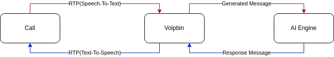
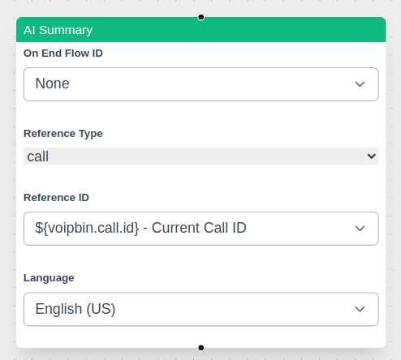

Overview
VoIPBin’s AI is a built-in AI agent that enables automated, intelligent voice interactions during live calls. Designed for seamless integration within VoIPBin’s flow, the AI utilizes ChatGPT as its AI engine to process and respond to user inputs in real time. This allows developers to create dynamic and interactive voice experiences without requiring manual intervention.
How it works
Action component
The AI is integrated as one of the configurable components within a VoIPBin flow. When a call reaches an AI action, the system triggers the AI to generate a response based on the provided prompt. The response is then processed and played back to the caller using text-to-speech (TTS). If the response is in a structured JSON format, VoIPBin executes the defined actions accordingly.

TTS/STT + AI Engine
VoIPBin’s AI is built using TTS/STT + AI Engine, where speech-to-text (STT) converts spoken words into text, and text-to-speech (TTS) converts responses back into audio. The system processes these in real time, enabling seamless conversations.
Voice Detection and Play Interruption:
In addition to basic TTS and STT functionalities, VoIPBin incorporates voice detection to create a more natural conversational flow. While the AI is speaking (i.e., playing TTS media), if the system detects the caller’s voice, it immediately stops the TTS playback and routes the caller’s speech (via STT) to the AI engine. This play interruption feature ensures that if the user starts talking, their input is prioritized, enabling a dynamic interaction that more closely resembles a real conversation.
Context Retention
VoIPBin’s AI supports context saving. During a conversation, the AI remembers prior exchanges, allowing it to maintain continuity and respond based on earlier parts of the interaction. This provides a more natural and human-like dialogue experience.
Multilingual support
VoIPBin’s AI supports multiple languages. See supported languages: supported languages.
External AI Agent Integration
For users who prefer to use external AI services, VoIPBin offers media stream access via MCP (Media Control Protocol). This allows third-party AI engines to process voice data directly, enabling deeper customization and advanced AI capabilities.
MCP Server
A recommended open-source implementation is available here:
Using the AI
Initial Prompt
The initial prompt serves as the foundation for the AI’s behavior. A well-crafted prompt ensures accurate and relevant responses. There is no enforced limit to prompt length, but we recommend keeping this confidential to ensure consistent performance and security.
Example Prompt:
Pretend you are an expert customer service agent.
Please respond kindly.
But, if you receive a request to connect to the agent, respond with the next message in JSON format.
Do not include any explanations in the response.
Only provide an RFC8259-compliant JSON response following this format without deviation.
[
{
"action": "connect",
"option": {
"source": {
"type": "tel",
"target": "+821100000001"
},
"destinations": [
{
"type": "tel",
"target": "+821100000002"
}
]
}
}
]
Handling Responses
Text String Response: The AI’s response is played as speech using TTS.
JSON Response: The AI returns a structured JSON array of action objects, which VoIPBin executes accordingly.
Error Handling: If the AI generates an invalid JSON response, VoIPBin treats it as a normal text response and plays it via TTS.
Multiple AI Actions in a Flow
VoIPBin allows multiple AI actions within a single flow. Developers can configure different AI interactions at various points, enabling flexible and context-aware automation.
Action Object Structure
See detail here.
VoIPBin supports a wide range of actions. Developers should refer to VoIPBin’s documentation for a complete list of available actions.
Technical Considerations
Escalation to Live Agents
VoIPBin does not provide an automatic escalation mechanism for transferring calls to human agents. Instead, developers must configure AI responses accordingly by ensuring that AI logic returns a JSON action when escalation is required.
Logging & Debugging
Developers can debug AI interactions using VoIPBin’s transcription logs, which include STT output and AI responses.
AI Summary
The AI Summary feature in VoIPBin generates structured summaries of call transcriptions, recordings, or conference discussions. It provides a concise summary of key points, decisions, and action items based on the provided transcription source.
Supported Resources
AI summaries work with a single resource at a time. The supported resources are:
Real-time Summary: * Live call transcription * Live conference transcription
Non-Real-time Summary: * Transcribed recordings (post-call) * Recorded conferences (post-call)
Choosing Between Real-time and Non-Real-time Summaries
Developers must decide whether to use a real-time or non-real-time summary based on their needs:
Use Case |
Summary Type |
Recommendation |
|---|---|---|
Live call monitoring |
Real-time |
Use AI summary with a live call transcription |
Live conference insights |
Real-time |
Use AI summary with a live conference transcription |
Post-call analysis |
Non-real-time |
Use AI summary with transcribe_id from a completed call |
Recorded conference summary |
Non-real-time |
Use AI summary with recording_id |
AI Summary Behavior
The summary action processes only one resource at a time.
If multiple AI summary actions are used in a flow, each executes independently.
If an AI summary action is triggered multiple times for the same resource, it only returns the most recent segment.
In conference calls, the summary is unified across all participants rather than per speaker.
Ensuring Full Coverage
Since starting an AI summary action late in the call results in missing earlier conversations, developers should follow best practices: * Enable transcribe_start early: This ensures that transcriptions are available even if an AI summary action is triggered later. * Use transcribe_id instead of call_id: This allows summarizing a full transcription rather than just the latest segment. * For post-call summaries, use recording_id: This ensures that the full conversation is summarized from the recorded audio.